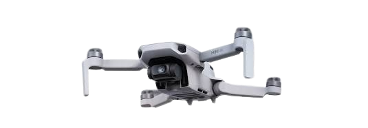

Comece a voar hoje mesmo!
Destaque interativo com Card do Bootstrap 5 + JavaScript

DJI Mini 2 SE / DJI Mini (Série Mini em geral)
É o queridinho dos iniciantes. Geralmente pesa abaixo de 249g (o que facilita bastante nas regras e burocracias), conta com GPS integrado (se perder o sinal, ele volta sozinho para o ponto de partida) e tem uma ótima estabilização de voo.